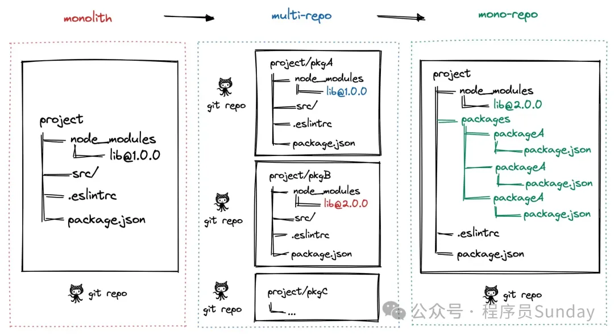
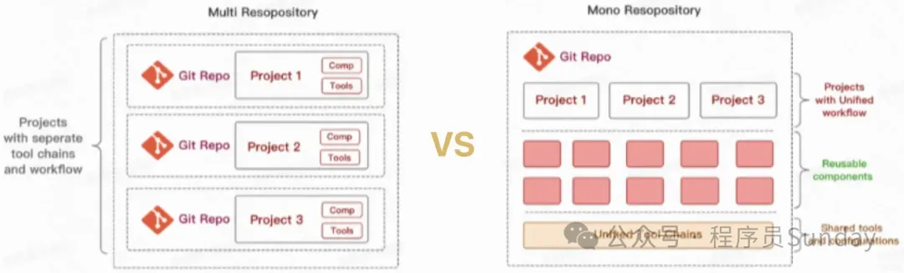
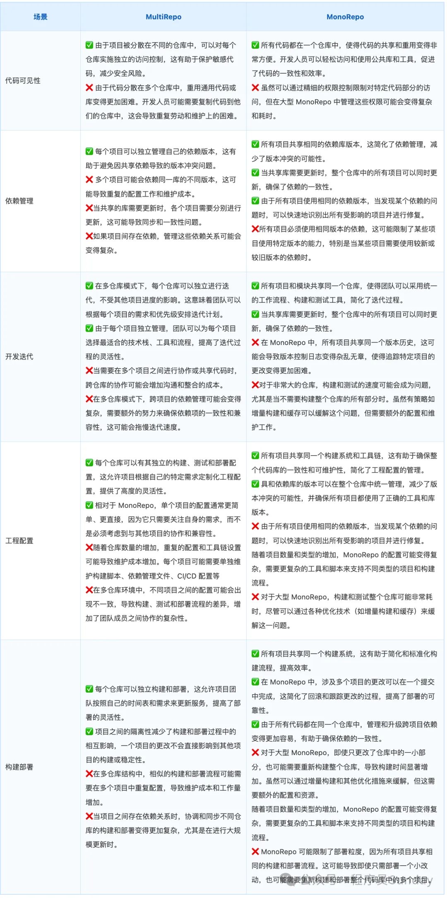
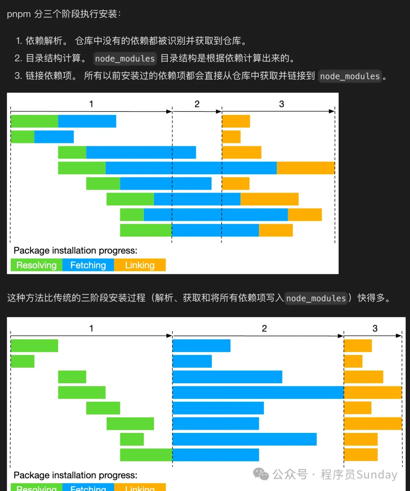

训练营同学在学习 Vue3 或者 React 源码的时候，可以发现 Vue3 或者 React 的源码是基于 monorepo（单体仓库）架构的。其所有相关的代码和项目都被组织在同一个版本控制仓库中，同时又必须使用 pnpm 进行管理。
那么为什么 Vue3 或者 React 要使用 monorepo 架构呢？ monorepo 又是什么？为什么 monorepo 要通过 pnpm 进行管理呢？这篇文章，咱们来看一下这些问题。
Monorepo 的本质及其优势
Monorepo 是软件开发中的一种代码管理方法，它将多个项目集中到单个代码仓库中。
Monorepo 为团队提供了简化的代码共享、版本控制和部署流程，同时提高了可重用性和协作效率。这种方法已被广泛采用，包括一些知名公司如 Google、Facebook 和 Microsoft 等。
Monorepo 一词源自希腊语"μόνος"（单一）和"repo"（代码库）。虽然一开始可能有些反直觉，但将多个项目放置于同一代码库中确实带来了许多好处。
Monorepo 的演变与优势
Monorepo 的发展经历了从单一仓库巨石应用（Monolith），到多仓库多模块应用（MultiRepo），再到单仓库多模块应用（MonoRepo）的阶段。每个阶段都有其独特的优势和挑战，具体采用哪种方式取决于项目的需求和团队的工作流程。
- 单仓库巨石应用（Monolith）：在项目初期，Monolith 结构比较常见，因为所有代码都集中在一个仓库中，便于管理和部署。然而，随着项目规模的增长，Monolith 结构逐渐显现出构建时间增加、代码冲突频繁以及难以维护等缺点。
- 多仓库多模块应用（MultiRepo）：为了克服 Monolith 的缺点，团队可能会将项目拆分成多个较小的模块，每个模块使用单独的仓库管理。这种方式提高了模块的独立性，便于团队并行开发和维护，但也带来了跨仓库依赖管理、版本同步问题以及工作流程复杂性增加等新挑战。
- 单仓库多模块应用（MonoRepo）：为了解决多仓库管理带来的问题，一些团队和项目转向使用单一仓库管理多个模块。这种方式简化了跨模块的依赖管理，提高了代码共享效率，并统一了构建和测试流程。然而，MonoRepo 也面临着更精细的权限控制、大型仓库性能优化等挑战。
在选择适合项目的策略时，需要综合考虑团队规模、项目复杂度以及构建测试流程的需求等因素。
一个真正的 Monorepo 不仅仅是将多个项目代码放在同一个代码库中。它还需要这些项目之间有明确的关系和定义。如果项目之间缺乏良好的关系，那么就不能称之为 Monorepo。
类似地，如果一个代码库包含庞大的应用，但没有进行合理的分割和封装，那么这只是一个大型的代码库，而不是真正的 Monorepo。即使你给它取一个新的名字，也无法改变它的本质。
Monorepo 中的各个项目（或模块、组件）之间应该有清晰、明确的依赖关系和接口定义。这有助于确保模块之间能够高效协作，同时保持一定程度的独立性和可重用性。
Monorepo 优劣
 Monorepo 使用场景
Monorepo（单一仓库）模式适用于多种场景，特别是在以下情况下，使用 Monorepo 可以带来显著的好处：
- 大型团队协作：对于大型团队在多个相关项目上进行协作时，Monorepo 可以简化协作流程。所有项目位于同一仓库中，团队成员可以轻松访问和修改跨项目的代码，促进了团队间的沟通和合作。
- 微服务架构：在微服务架构中，系统由多个小型、独立服务组成。使用 Monorepo 可以方便地管理这些服务的代码，确保服务之间的兼容性，并简化跨服务的重构和共享代码。
- 多平台/多产品开发：对于跨多个平台（如 Web、iOS、Android）或多个产品线开发的公司，Monorepo 提供了一个统一的代码基础。这使得共享通用库、组件和工具变得简单，同时保持构建和发布流程的一致性。
- 共享库和组件：在开发涉及多个共享库或可重用组件的项目时，Monorepo 允许开发人员轻松更新和维护这些共享资源。这有助于提高代码重用率，降低维护成本。
- 统一的工具和流程：对于希望统一代码风格、构建工具、测试框架和部署流程的团队，Monorepo 提供了一个共同的基础设施。这有助于标准化开发实践，简化新成员的入职过程。
- 原子性更改和重构：当需要对跨多个项目或模块的代码进行重构或更新时，Monorepo 使得这些更改可以作为一个原子提交进行。这降低了部署和回滚的复杂性。
统一配置：整合 ESLint、TypeScript 和 Babel
在 Monorepo 项目中，统一配置 ESLint、TypeScript 和 Babel 可以有助于保持代码一致性，简化项目维护，并提高开发效率。
TypeScript
我们可以在 packages 目录中放置 tsconfig.settings.json 文件，并在文件中定义通用的 TypeScript 配置。然后，在每个子项目中，通过 extends 属性引入通用配置，并将 compilerOptions.composite 设置为 true。理想情况下，子项目的 tsconfig.json 文件应该只包含以下内容：
{
"extends": "../../tsconfig.settings.json", // 继承通用配置
"compilerOptions": {
"composite": true, // 用于帮助 TypeScript 快速确定引用工程的输出文件位置
"outDir": "dist",
"rootDir": "src"
},
"include": ["src"]
}
ESLint
对于 ESLint，我们可以使用相同的思路来配置。在每个子项目的 .eslintrc.js 文件中，使用 extends 字段继承顶层配置，并添加或覆盖规则。
module.exports = {
extends: "../../.eslintrc.js",
rules: {
// 重写或添加规则
},
};
Babel
Babel 配置文件的合并方式与 TypeScript 类似，甚至更加简单。我们只需在子项目的 .babelrc 文件中声明如下：
{
"extends": "../../.babelrc"
}
当所有配置准备完毕时，我们的项目目录结构大致如下所示：
├── package.json
├── .babelrc
├── .eslintrc
├── tsconfig.settings.json
└── packages/
│ ├── tsconfig.settings.json
│ ├── .babelrc
├── @mono/project_1/
│ ├── index.js
│ ├── .eslintrc
│ ├── .babelrc
│ ├── tsconfig.json
│ └── package.json
└───@mono/project_2/
├── index.js
├── .eslintrc
├── .babelrc
├── tsconfig.json
└── package.json
以上是统一配置 ESLint、TypeScript 和 Babel 的方法，通过这种方式，我们可以更轻松地管理和维护 Monorepo 项目中的代码。
为什么 vue3 || React 要使用 monorepo 架构？
根据以上内容所述，Vue3 采用 monorepo 架构的决定主要基于以下几个考虑：
- 便于代码管理和共享: Monorepo 架构使得不同模块、组件、工具等相关的代码可以统一存放在一个仓库中，便于管理和共享。这样的架构有助于更好地组织代码结构，减少重复代码，并使得不同模块之间的依赖关系更清晰。
- 更简单的依赖管理: 在 monorepo 中，不同项目之间的依赖关系更加清晰，开发人员可以更轻松地管理这些依赖关系，确保代码库的稳定性和一致性。
- 易于协作和开发: 使用 monorepo 架构可以促进团队协作和开发效率。开发人员可以更方便地在不同项目之间共享代码、解决问题，并且可以更容易地进行代码审查和协作开发。
- 更好的版本管理: 将相关的项目放在同一个仓库中，使得版本管理更加一致和统一。这样做有助于确保不同模块之间的版本兼容性，并使得发布和部署过程更加简单和可靠。
为什么 pnpm 能实现 Monorepo
pnpm 利用其软链接和硬链接功能实现了内容寻址存储的方法来保存依赖项。这种方法基于依赖项内容的哈希值确定存储位置，带来了以下优势：
- 依赖项共享：多个项目依赖相同版本的包时，在全局存储中只保留一份副本，通过硬链接指向这个副本，大大减少了磁盘空间的占用。
- 内容完整性：内容寻址存储确保了依赖项的完整性。任何对文件内容的更改都会导致哈希值的变化，防止了依赖污染和意外更改。
其中一个受大家比较欢迎的就是我们打开 pnpm 官网就能直接看到的内容，那就是安装快：
pnpm 在安装依赖包时，主要经历了以下三个步骤：解析依赖、获取依赖以及链接依赖。这个过程通过优化来确保高效的依赖管理，尤其在处理大型项目或 Monorepo 时。
- 解析依赖（Dependency Resolution） 在这个阶段，pnpm 需要确定要安装的每个依赖包的具体版本。它会查看项目的 package.json 文件以及任何现有的锁文件（如 pnpm-lock.yaml），来决定哪些版本的包需要被安装。解析依赖时，pnpm 会遵循以下规则：
- 版本兼容性：基于 package.json 中指定的版本范围，选择与之兼容的最新版本。
- 锁文件：如果存在锁文件，pnpm 会优先使用锁文件中锁定的版本，以确保依赖的一致性和项目的可重现性。
- 获取依赖（Fetching Dependencies） 一旦确定了需要安装的依赖版本，pnpm 将开始获取这些依赖包。这个过程包括以下几个步骤：
- 检查全局存储：pnpm 首先会检查其全局存储中是否已经存在所需版本的依赖包。如果已经存在，就不需要从远程仓库下载，直接重用即可。
- 下载缺失的依赖：对于全局存储中不存在的依赖，pnpm 会从 npm 或其他配置的仓库下载它们。下载的依赖包会被存储在全局存储中，以便将来重用。
- 内容寻址存储：pnpm 使用内容寻址方式来存储依赖包，即根据包内容的哈希值来确定存储路径。这确保了相同内容的包在全局存储中只有一份副本，节省了磁盘空间。
- 链接依赖（Linking Dependencies） 获取依赖包之后，pnpm 需要将这些依赖链接到项目的 node_modules 目录中，使得项目能够使用这些依赖。这个步骤涉及：
- 创建硬链接和符号链接：对于每个依赖包，pnpm 会在项目的 node_modules 目录中创建指向全局存储中相应包的硬链接。如果是包内部的依赖，还可能创建符号链接来保持正确的依赖结构。
- pnpm 通过构建一个虚拟的 node_modules 目录来模拟传统的嵌套依赖结构，但实际上依赖之间是通过符号链接相连的。这样做既保持了 npm 生态的兼容性，又避免了重复的依赖副本和深层嵌套的问题。
- 通过这种链接方式，pnpm 确保了项目只能访问其直接依赖的包，防止了对未声明依赖的意外访问，提高了项目的稳定性和安全性。
通过上述三个步骤，pnpm 实现了对依赖的高效管理，优化了存储空间的使用，加快了依赖安装的速度，同时还保证了项目依赖的一致性和隔离性。
pnpm 在安装依赖时能够并行执行多个任务，比如解析依赖、下载和链接依赖。这种并行处理机制充分利用了现代多核 CPU 的性能，显著减少了安装过程的总时间。
pnpm 安装速度快除了上面提到的这些原因之外，它的另一个优点是它支持增量更新。当你添加或更新项目依赖时，pnpm 只会下载那些实际改变了的包。如果某个包的版本已经存在于全局存储中，pnpm 将重用这个版本，避免了不必要的下载，从而加快了安装过程。
在 Monorepo 中，包之间经常相互依赖。pnpm 通过 Workspace 协议支持这种内部依赖，允许包在其 package.json 中直接引用 Monorepo 中的其他包，如：
"dependencies": {
"foo": "workspace:^1.0.0"
}
这种方式使得在本地开发时，包之间可以轻松地相互依赖，而不需要发布到 npm 上。pnpm 会自动处理这些内部依赖，并确保正确的链接和版本匹配。
在 workspace 模式下，项目根目录通常不会作为一个子模块或者 npm 包，而是主要作为一个管理中枢，执行一些全局操作，安装一些共有的依赖，每个子模块都能访问根目录的依赖，适合把 TypeScript、eslint 等公共开发依赖装在这里，下面简单介绍一些常用的中枢管理操作。
在项目跟目录下运行 pnpm install，pnpm 会根据当前目录 package.json 中的依赖声明安装全部依赖，在 workspace 模式下会一并处理所有子模块的依赖安装。
安装项目公共开发依赖，声明在根目录的 package.json - devDependencies 中。-w 选项代表在 monorepo 模式下的根目录进行操作。
# 安装
pnpm install -wD xxx
# 卸载
pnpm uninstall -w xxx
执行根目录的 package.json 中的脚本
pnpm run xxx
在 workspace 模式下，pnpm 主要通过 --filter 选项过滤子模块，实现对各个工作空间进行精细化操作的目的。
例如 a 包安装 lodash 外部依赖，-S 和 -D 选项分别可以将依赖安装为正式依赖(dependencies)或者开发依赖(devDependencies)：
# 为 a 包安装 lodash
pnpm --filter a add -S lodash # 生产依赖
pnpm --filter a add -D lodash # 开发依赖
指定模块之间的互相依赖。下面的例子演示了为 a 包安装内部依赖 b。
# 指定 a 模块依赖于 b 模块
pnpm --filter a i -S b
pnpm workspace 对内部依赖关系的表示不同于外部，它自己约定了一套 Workspace 协议。下面给出一个内部模块 a 依赖同是内部模块 b 的例子。
{
"name": "a",
// ...
"dependencies": {
"b": "workspace:^"
}
}
在实际发布 npm 包时，workspace:^ 会被替换成内部模块 b 的对应版本号(对应 package.json 中的 version 字段)。替换规律如下所示：
{
"dependencies": {
"a": "workspace:*", // 固定版本依赖，被转换成 x.x.x
"b": "workspace:~", // minor 版本依赖，将被转换成 ~x.x.x
"c": "workspace:^" // major 版本依赖，将被转换成 ^x.x.x
}
}